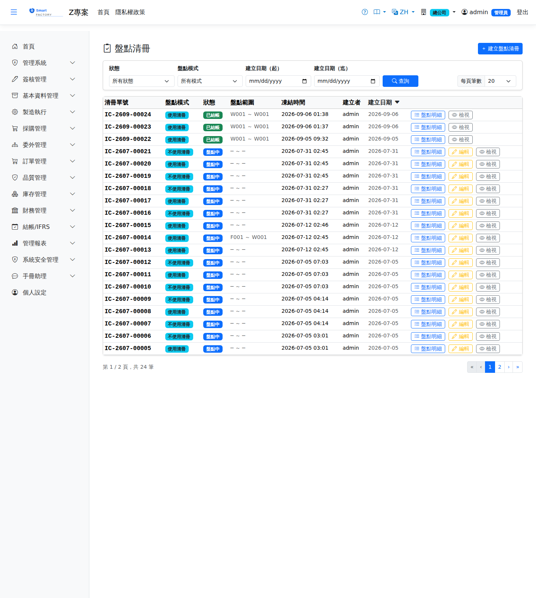

盤點清冊Inventory Count
路由：/InventoryCount | 盤點計畫、盤點輸入與盤盈虧調整Route: /InventoryCount | Count planning, count entry and gain/loss adjustment
建立盤點清冊凍結帳面量，盤點人員輸入實盤量（支援行動裝置），差異經覆核後產生庫存調整（盤盈虧）過帳。Creating a count sheet freezes the book quantity; counters enter the actual quantity (mobile devices supported), and once the differences are reviewed a stock adjustment (count gain/loss) is posted.

庫存盤點畫面截圖（示意，實際欄位/資料依權限與查詢條件而異）Inventory count screenshot (illustrative; actual fields and data vary by permission and query criteria)
查詢Search
1
查詢列輸入條件後點「查詢」；欄位標題可點擊排序，清單下方有分頁導航。Enter your criteria on the query bar and click "Search"; column headers can be clicked to sort, and the paging controls sit below the list.
作業流程Process
盤點Stock count
1
點「新增」選擇盤點範圍（倉庫/儲位/品號類別）產生清冊，凍結帳面量。Click "Add", choose the count scope (warehouse / location / product category) to generate the sheet, and the book quantity is frozen.
2
盤點人員逐筆輸入實盤量；可多人分區同時進行。Counters enter the actual quantity line by line; several people can count different areas at the same time.
3
覆核差異清單，確認後產生調整單過帳盤盈虧。Review the variance list; confirming creates the adjustment that posts the count gain or loss.
列印Printing
清單每列的 按鈕（需有列印權限）在新分頁開啟含 QR Code 的列印單，可直接列印或另存 PDF。盤點表列印逐行列出倉庫、儲位、批號、品號與品名，並留初盤、複盤兩欄；刻意不印帳面數量，避免盤點人照抄帳面數。The button on each row of the list (print permission required) opens a printout with a QR code in a new tab, ready to print or save as PDF. The count sheet printout lists warehouse, location, lot, product code and name line by line, with columns for the first count and the recount; the book quantity is deliberately left off so counters cannot copy it.
欄位說明Field reference
查詢條件Query criteria
| 條件Condition | 說明Guide |
|---|---|
| 狀態Status | 依清冊狀態篩選（草稿／已凍結／盤點中／已完成）Filters by count sheet status (Draft / Frozen / Counting / Completed) |
| 盤點模式Count Mode | 全盤（整倉一次盤完）或循環盤點（按類別/區域分批）Full count (the whole warehouse at once) or cycle count (in batches by category or area) |
| 建立日期（起 / 迄）Created between (from / to) | 依清冊建立日期區間篩選Filters by the creation date range of the count sheet |
清單欄位List columns
| 欄位Field | 說明Guide |
|---|---|
| 清冊單號Sheet No. | 系統採番，不可修改Numbered by the system; not editable |
| 盤點模式Count Mode | 全盤或循環盤點，決定清冊的抽取範圍Full or cycle counting, which decides the scope of the sheet |
| 狀態Status | 清冊的執行進度；凍結後該範圍的庫存異動受限，確保帳面基準不變Progress of the count sheet; once frozen, stock movements within the scope are restricted so that the book baseline stays unchanged |
| 盤點範圍Count Range | 本次清冊涵蓋的倉庫／儲位／類別條件Warehouse / location / category scope of this count sheet |
| 凍結時間Snapshot Time | 凍結帳面數量的時間點，盤差以此時的帳面量為基準計算The moment the book quantity is frozen; count differences are measured against the book quantity at that point |
| 建立者 / 建立日期Created by / Created date | 清冊的建立人與建立時間Who created the count sheet and when |
相關畫面Related screens
注意：Note:盤點期間建議暫停該範圍的出入庫作業，避免帳面基準失真。 Receipts and issues within the counted scope should be suspended while the count is running, so that the book baseline is not distorted.